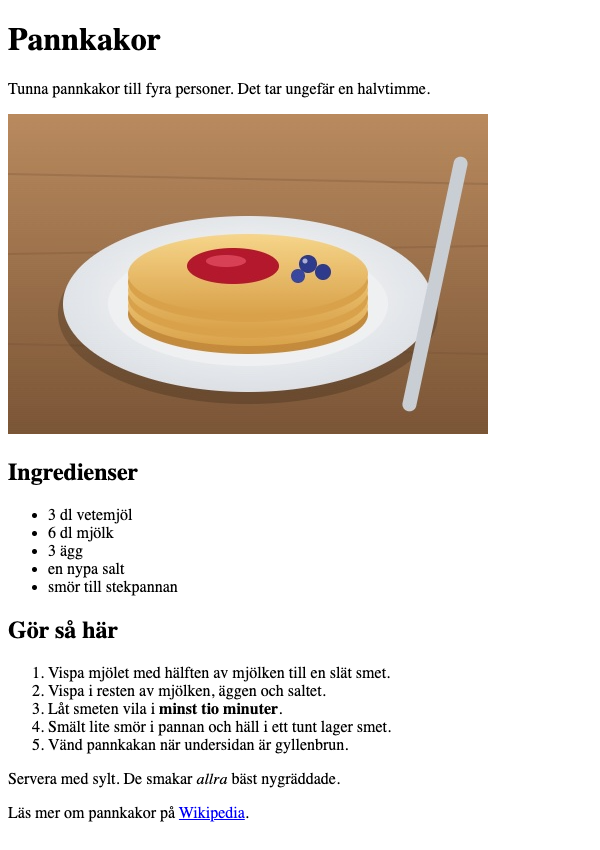

Övning T2 · Receptet
Läs så här: Välj en nivå per etapp: 🟢 Grön ger dig varje steg, 🔵 Blå säger vad som behövs men inte koden, 🔴 Röd ger bara kravet. Etapperna är desamma på alla nivåer, så du kan byta nivå mellan etapperna (och mitt i om du fastnar). Varje etapp slutar med Så vet du att etappen är klar: kontrollera den innan du går vidare. Längst ner finns Vanliga fel och, om du vill ha mer, ⚫ Svart.
Du bygger: en receptsida för pannkakor, recept.html, i din mapp ovningar. Sidan har rubriker, en punktlista med ingredienser, en numrerad lista med stegen, ett par ord i fetstil och kursiv, en bild på pannkakorna och en länk till Wikipedia. Det är samma byggstenar som du använder i projektet senare i dag.

Du behöver: mappen ovningar från Övning T1, öppen i VS Code, och Live Server igång (tillägget i VS Code som visar sidan i Chrome och laddar om den när du sparar). Bildfilen pannkakor.jpg, som ligger bredvid den här övningen i Learnpoint.
Etapp 1 · En ny sida med skelettet
Varför: varje sida är en egen fil, och varje fil behöver samma skelett som index.html från T1.
🟢 Grön · Steg för steg
- I VS Code: håll pekaren över OVNINGAR i filpanelen (listan över filerna, till vänster) och klicka på ikonen New File…. Skriv
recept.htmloch tryck Enter. - Skriv skelettet i den nya filen. Det är samma som i
index.html, bara texten i<title>är ny (du får kopiera frånindex.htmloch ändra titeln):
<!doctype html>
<html>
<head>
<meta charset="utf-8" />
<title>Recept: Pannkakor</title>
</head>
<body></body>
</html>- Spara (Cmd+S / Ctrl+S).
- I Chrome: klicka i adressfältet och ändra slutet av adressen från
index.htmltillrecept.html, så att det stårhttp://127.0.0.1:5500/recept.html. Tryck Enter. (Är Live Server inte igång: högerklicka pårecept.htmli filpanelen och välj Open with Live Server.)
🔵 Blå · Med ledtrådar
Skapa recept.html i ovningar. Skriv samma skelett som i index.html (doctype, html, head med meta charset och title, body). Titeln ska vara Recept: Pannkakor. Öppna sidan i Chrome via Live Server: adressen är densamma som för index.html, bara filnamnet sist är annorlunda.
🔴 Röd · Bara kravet
recept.html i ovningar med komplett skelett och titeln Recept: Pannkakor, öppen i Chrome via Live Server.
http://127.0.0.1:5500/recept.html, och fliken heter Recept: Pannkakor.Etapp 2 · Rubriker och ingress
Varför: rubrikerna är sidans innehållsförteckning, och nivåerna h1 och h2 talar om vad som är huvudrubrik och vad som är underrubrik.
🟢 Grön · Steg för steg
- Klicka mellan
<body>och</body>, tryck Enter och skriv:
<h1>Pannkakor</h1>
<p>Tunna pannkakor till fyra personer. Det tar ungefär en halvtimme.</p>
<h2>Ingredienser</h2>
<h2>Gör så här</h2>- Spara och titta i Chrome.
<h1> är huvudrubriken, och en sida har en sådan. <h2> är en underrubrik, en nivå under. Det finns också <h3> för rubriker under en <h2>. Webbläsaren visar h2 mindre än h1, men det viktiga är nivån: en skärmläsare (programmet som läser upp sidan för den som inte ser) använder rubriknivåerna för att hoppa runt på sidan. Det känner du igen från WCAG i Interaktionsdesign.
🔵 Blå · Med ledtrådar
Inuti body, i den här ordningen:
- huvudrubrik (
h1): Pannkakor - stycke (
p): Tunna pannkakor till fyra personer. Det tar ungefär en halvtimme. - underrubrik (
h2): Ingredienser - underrubrik (
h2): Gör så här
Listorna kommer mellan underrubrikerna i nästa etapp.
🔴 Röd · Bara kravet
Huvudrubriken Pannkakor, ett stycke som ingress, och underrubrikerna Ingredienser och Gör så här på rätt rubriknivå. Texterna finns i slutbilden.
Etapp 3 · Två listor
Varför: ingredienserna har ingen ordning, men stegen har det, och HTML har en sorts lista för vardera.
🟢 Grön · Steg för steg
- Ställ markören i slutet av raden
<h2>Ingredienser</h2>, tryck Enter och skriv punktlistan:
<ul>
<li>3 dl vetemjöl</li>
<li>6 dl mjölk</li>
<li>3 ägg</li>
<li>en nypa salt</li>
<li>smör till stekpannan</li>
</ul>- Ställ markören i slutet av raden
<h2>Gör så här</h2>, tryck Enter och skriv den numrerade listan:
<ol>
<li>Vispa mjölet med hälften av mjölken till en slät smet.</li>
<li>Vispa i resten av mjölken, äggen och saltet.</li>
<li>Låt smeten vila i minst tio minuter.</li>
<li>Smält lite smör i pannan och häll i ett tunt lager smet.</li>
<li>Vänd pannkakan när undersidan är gyllenbrun.</li>
</ol>- Spara och titta i Chrome.
Kom ihåg att VS Code skriver sluttaggen (den med snedstreck, till exempel </ul>) åt dig när du skriver starttaggen <ul>. Hoppa förbi den med högerpilen i stället för att skriva den en gång till.
<ul> är en punktlista (unordered list, lista utan ordning) och <ol> en numrerad lista (ordered list). Varje sak i listan är ett eget <li> (list item), och alla <li> ligger inuti listan. Siffrorna i den numrerade listan skriver du inte själv; webbläsaren räknar.
🔵 Blå · Med ledtrådar
- Under Ingredienser: en punktlista (
ul) med fem punkter (li): 3 dl vetemjöl, 6 dl mjölk, 3 ägg, en nypa salt, smör till stekpannan. - Under Gör så här: en numrerad lista (
ol) med de fem stegen i slutbilden, ettliper steg. Skriv inga siffror själv.
Varje li ska ligga inuti sin lista.
🔴 Röd · Bara kravet
Ingredienserna som punktlista och stegen som numrerad lista, med texterna i slutbilden.
<li> inuti <ul> och fem <li> inuti <ol>.Etapp 4 · Fetstil och kursiv
Varför: strong och em betonar ord, och betoningen följer med även när sidan läses upp.
🟢 Grön · Steg för steg
- I det tredje steget i den numrerade listan: lägg
<strong>och</strong>runt orden minst tio minuter, så att raden blir:
<li>Låt smeten vila i <strong>minst tio minuter</strong>.</li>- Ställ markören i slutet av raden
</ol>, tryck Enter och skriv ett nytt stycke:
<p>Servera med sylt. De smakar <em>allra</em> bäst nygräddade.</p>- Spara och titta i Chrome.
<strong> betyder viktigt och visas i fetstil. <em> (emphasis) betyder betonat och visas kursivt, alltså lutande. Här ligger elementen inuti en mening, inuti ett <li> eller ett <p>: det är nästling igen.
🔵 Blå · Med ledtrådar
- I steg 3 ska minst tio minuter vara markerat som viktigt (
strong). Elementet läggs runt bara de orden, inutili. - Efter den numrerade listan: ett nytt stycke, Servera med sylt. De smakar allra bäst nygräddade., där allra är betonat (
em).
🔴 Röd · Bara kravet
minst tio minuter markerat som viktigt (fetstil) och allra betonat (kursiv) i ett nytt stycke efter stegen, som i slutbilden.
<strong> inuti det tredje <li>.Etapp 5 · Bilden
Varför: en bild är en egen fil som sidan pekar på, och den behöver en alt-text för den som inte ser bilden.
🟢 Grön · Steg för steg
- Ladda ner
pannkakor.jpgfrån Learnpoint. Filen hamnar i mappen Hämtade filer (Downloads). - Flytta filen till mappen
ovningar: dra den från Finder (Mac) eller Utforskaren (Windows) och släpp den på OVNINGAR i filpanelen i VS Code. Nu liggerpannkakor.jpgi filpanelen, bredvidrecept.html. - I
recept.html: ställ markören i slutet av ingressen, raden som börjar med<p>Tunna pannkakor, tryck Enter och skriv:
<img src="pannkakor.jpg" alt="En hög pannkakor med sylt och blåbär" />- Spara och titta i Chrome.
<img> visar en bild. Attributet src (source, källa) är sökvägen till bildfilen, alltså vägen dit från sidan. Här är det bara filnamnet, eftersom bilden ligger i samma mapp som sidan. Attributet alt är bildens alternativtext: den läses upp av en skärmläsare och visas om bilden inte går att ladda. Skriv vad bilden visar. <img> har inget innehåll och därför ingen sluttagg; Prettier, tillägget som ordnar koden när du sparar, sätter /> sist, precis som på <meta />.
🔵 Blå · Med ledtrådar
- Hämta
pannkakor.jpgfrån Learnpoint och lägg den iovningar, bredvidrecept.html. - Efter ingressen: ett
img. Attributet som pekar på bildfilen hetersrc; filen ligger i samma mapp, så filnamnet räcker. Attributetaltbeskriver vad bilden visar.
🔴 Röd · Bara kravet
Bilden pannkakor.jpg (från Learnpoint) visas efter ingressen och har en alt-text som beskriver vad den visar.
src till pannkaka.jpg (utan r) och spara: nu syns en liten trasig bild och din alt-text i stället. Ändra tillbaka.Etapp 6 · Länken till Wikipedia
Varför: länkar är det som gör webben till en väv, och en länk till en annan webbplats, alltså någon annans sidor på internet, behöver hela adressen.
🟢 Grön · Steg för steg
- Ställ markören i slutet av stycket
<p>Servera med sylt …</p>, tryck Enter och skriv:
<p>
Läs mer om pannkakor på
<a href="https://sv.wikipedia.org/wiki/Pannkaka">Wikipedia</a>.
</p>Du kan också skriva allt på en rad. När raden blir längre än 80 tecken delar Prettier upp den så här när du sparar. Det ändrar ingenting i Chrome; radbrytningar i koden syns inte på sidan.
- Spara och titta i Chrome. Klicka på länken Wikipedia. Gå sedan tillbaka med bakåtpilen i Chrome.
<a> är en länk (a för anchor, ankare). Texten mellan taggarna är det man klickar på. Attributet href är adressen länken går till. Till en annan webbplats skriver du hela adressen, med https:// först.
Hela recept.html ser nu ut så här:
<!doctype html>
<html>
<head>
<meta charset="utf-8" />
<title>Recept: Pannkakor</title>
</head>
<body>
<h1>Pannkakor</h1>
<p>Tunna pannkakor till fyra personer. Det tar ungefär en halvtimme.</p>
<img src="pannkakor.jpg" alt="En hög pannkakor med sylt och blåbär" />
<h2>Ingredienser</h2>
<ul>
<li>3 dl vetemjöl</li>
<li>6 dl mjölk</li>
<li>3 ägg</li>
<li>en nypa salt</li>
<li>smör till stekpannan</li>
</ul>
<h2>Gör så här</h2>
<ol>
<li>Vispa mjölet med hälften av mjölken till en slät smet.</li>
<li>Vispa i resten av mjölken, äggen och saltet.</li>
<li>Låt smeten vila i <strong>minst tio minuter</strong>.</li>
<li>Smält lite smör i pannan och häll i ett tunt lager smet.</li>
<li>Vänd pannkakan när undersidan är gyllenbrun.</li>
</ol>
<p>Servera med sylt. De smakar <em>allra</em> bäst nygräddade.</p>
<p>
Läs mer om pannkakor på
<a href="https://sv.wikipedia.org/wiki/Pannkaka">Wikipedia</a>.
</p>
</body>
</html>🔵 Blå · Med ledtrådar
Sist i body: ett stycke med texten Läs mer om pannkakor på Wikipedia. där ordet Wikipedia är en länk (a). Attributet med adressen heter href, och adressen är https://sv.wikipedia.org/wiki/Pannkaka. Länken ligger inuti stycket.
🔴 Röd · Bara kravet
Sist på sidan: ett stycke där ordet Wikipedia länkar till Wikipedias artikel om pannkakor (https://sv.wikipedia.org/wiki/Pannkaka).
⚫ Svart · Utöka (frivilligt, utan facit)
Lägg till en underrubrik Tips sist på sidan, och under den en <h3> per tips (till exempel Blåbärspannkakor och Glutenfritt) med ett kort stycke under varje. Gör sedan ingredienslistan mer detaljerad med en lista inuti en lista: punkten smör till stekpannan får en egen liten punktlista under sig med eller margarin och eller rapsolja. Den inre listan ska ligga inuti <li>, före </li>. Kontrollera i Elements att nästlingen blev som du tänkt.
Vanliga fel
- Bilden syns inte, bara en liten ikon och alt-texten: Chrome hittar inte filen. Jämför
srcmed filnamnet i filpanelen, tecken för tecken:pannkakor.jpg, intePannkakor.jpgellerpannkakor.jpeg. Kontrollera också att bilden ligger iovningaroch inte kvar i Hämtade filer. - Listan har inga punkter eller siffror, allt står på en rad:
<li>saknas, eller ligger utanför<ul>/<ol>. Varje sak i listan ska omslutas av<li>och</li>, och alla<li>ska ligga mellan<ul>och</ul>(eller<ol>och</ol>). - Länken öppnar inte Wikipedia, Chrome visar "Cannot GET":
https://saknas ihref. Utan den tror Chrome attsv.wikipedia.org/…är en fil i din egen mapp. Skriv hela adressen.